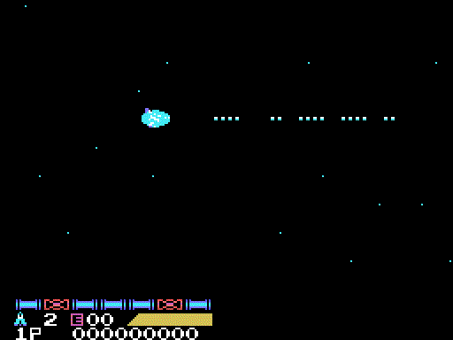
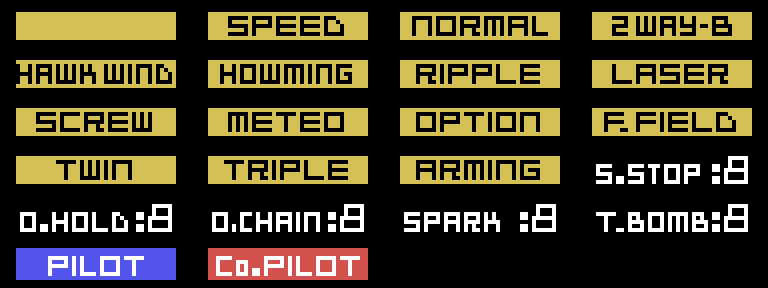
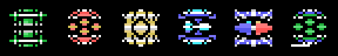

La nave y las armas
La nave, las piezas del marcador y los objetos están dibujados desde los bytes de la ROM. Los GIF son la VRAM de cada cuadro de una partida en openMSX, pintada como la pinta el TMS9918 (tools/anima.py), un cuadro de cada tres.
La nave

Las catorce posturas.
Son dos sprites de 16 x 16 y catorce posturas (p09:A145-p09:A19F, dibujos en p14:95F7): recta, subiendo y bajando, las mismas con el escudo delante y otras tantas para las fases verticales. El escudo aguanta los golpes que cuenta IY+22 (p02:960B).
Hay dos naves: SABEL TIGER, la del piloto IGGY ROCK, y THRASHER, la de ZOWIE SCOTT. La pantalla SELECTION de p12:B877 pregunta YES o NO a «PLAYER1 JOINT GAME».
Las armas

Las cuatro opciones, que siguen a la nave por donde ha pasado.
Abajo, el marcador tiene siete casillas (p00:5D8E). Cada cápsula 0x29 avanza la casilla elegida (p02:97C9) y el segundo botón la activa (p02:8929): la casilla sube su arma un nivel, con su rutina de la tabla p02:8967. A la derecha, una ventana de 5 caracteres dice qué se lleva: una pieza de la tabla p14:8849, 35 bytes de dibujo y uno de color, elegida por la casilla y su nivel (p00:5E52).

Las 22 piezas, dibujadas desde la ROM. Las de las siete casillas son iguales a las que pinta el juego en openMSX al coger cada cápsula (tools/armas.py coteja).
| Casilla | Nivel 1 | Nivel 2 | Nivel 3 |
|---|---|---|---|
| 1 | SPEED, siete veces | ||
| 2 | NORMAL | TWIN | TRIPLE |
| 3 | 2WAY-B | HAWK WING | HOWMING |
| 4 | RIPPLE | ARMING | |
| 5 | LASER | METEO | SCREW |
| 6 | OPTION, hasta cuatro (tres con dos jugadores) | ||
| 7 | F.FIELD, diez golpes |


Cada enlace lleva a la nave disparando con esa arma.
Las casillas 2, 4 y 5 son el arma principal (IY+40: 1 NORMAL, 2 RIPPLE, 3 LASER, 4 SCREW, 5 METEO, 6 TWIN y 7 TRIPLE) y la 3 y el ARMING, la del panel (IY+41: de 1 a 3 los misiles y 4 el ARMING). El segundo y el tercer nivel solo los da el juego con las dos naves juntas, en el estado 3 o 4 (p02:8995), cuando la ventana dice PILOT o Co.PILOT. Para los GIF, el arma se ha puesto a mano en la RAM (0xE340 y 0xE341); las opciones y el F.FIELD se activan como en el juego. El ARMING sale hacia donde se empuja el mando (p03:B43F): con la nave quieta no dispara.
Las cápsulas y los objetos

Los objetos del 1 al 6, dibujados con las rachas de p09:A331. El 2 y el 3 son iguales, a 0 bytes, a la VRAM de dos partidas en openMSX.
Hay tres cápsulas (p02:9670):
- la 0x29 avanza la casilla del marcador;
- la 0x2A da una bomba (IY+42,
p02:9806) y la ventana dice T.BOMB: mientras queden, el botón suelta bombas en vez del arma del panel (p03:A962); - la 0x35 suma uno a IY+1B; al llegar a 15 vuelve a 0 y sube IY+10, y con IY+10 en 7 da una vida más (
p02:974A).

La 0x29 y la 0x2A están en la hoja de los enemigos de la fase 4. La 0x35 no ha salido en ninguna de las partidas grabadas, y no se dibuja aquí.

Algunos enemigos sueltan, al romperlos, uno de estos objetos (p01:7C36; con un jugador, del 1 al 4). Son cuatro caracteres en el decorado (p02:8B97) y dan 30 puntos al cogerlos (p02:9909). Cada uno pone un reloj (0xE630 el modo, 0xE631 el tiempo) y su pieza en la ventana (p02:991E):
| Objeto | En la ventana | El reloj |
|---|---|---|
| 1 | S.STOP | modo 1, 0x10 |
| 2 | O.HOLD | modo 2, 0x15, e IY+34 = 1 |
| 3 | SPARK | modo 3 |
| 4 | nada | |
| 5 | modo 5, 0x10, en el otro jugador | |
| 6 | O.CHAIN | modo 6, 0x30 |
En las fases 3, 5 y 6 hay además objetos que se recogen (p12:A5CE). Al recogerlos sale una pantalla con su resultado. Con el objeto 1 dice «IN THE RUIN OF LATIS... YOU HAVE GOT A CRYSTAL BREEZE» y p01:7B73 pone 0xE30A = 1.